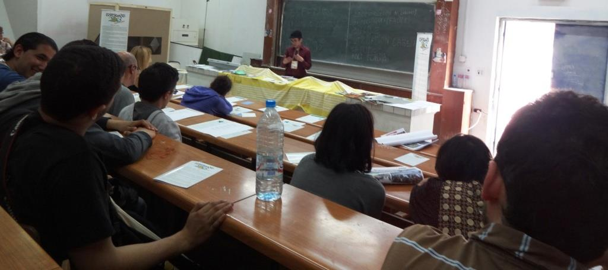

De la 26a ĝis la 30a de marto okazis la Monda Socia Forumo en Tuniso, Tunizio, kiu okazas la unuan fojon en araba lando kaj 2 jarojn post la tunizia revolucio. Ĉeestis de la 26a ĝis la 30a de marto 2013 laŭdire 60.000 partoprenantoj kaj miloj da organizaĵoj, budoj, debatoj kaj prelegoj, sur la giganta universitata tereno de Tuniso.
Ni prezentis Esperanton kiel solvon al problemo de monda komunikado.
Kiel en antaŭaj forumoj, UEA ĉeestis kune kun 4.000 aliaj organizaĵoj kaj 60.000 partoprenantoj el 120 landoj.
Mi (Maroko), Dorota Parzyszek (polino vivanta en Tunizio), Fabrice Morandeau (franca, blinda esperantisto kaj muzikisto), Muriel kaj Jean Jaque Mu ĉiuj el Francujo ankaŭ ĉeestis dum la socia forumo kaj vigligis nian ĉeeston kaj diskutojn kaj donis kontribuojn favorajn al Esperanto.
En la 28a de marto, kun Dorota, ni disdonis flugfoliojn en la Forumo mem kaj algluis afiŝojn en murojn proksime de la salono de mia prelego pri Esperanto. Antaŭ ol enkonduki Esperanton, mi komencis klarigi pri la komunikado-problemo inter diversaj landoj kun ekzemploj pri la organizaĵoj, kiuj ĉeestis en la Monda Socia Forumo, kaj pri la malfacileco de komunikado, kiu postulas tradukistojn, kiuj ne estas ĉiam je dispono, estas multekostaj kaj ne praktikaj. Poste ni parolis pri Esperanto kiel ebla solvo, kiu estas lernebla en kelkaj monatoj, kaj pri la ekesto de la lingvo kaj la facila gramatiko kompare al la angla kaj franca lingvoj.
Fabrice Morandeau kantis en Esperanto kaj en la franca. Post la kantado ni respondis la demandojn de la publiko. Dum la prelego ni ankaŭ montris multajn librojn en Esperanto kaj mian kolekton de la revuo Kontakto kiel enkondukon al la Esperanto-movado.
Mi mem produktis 25 lumdiskojn kun dokumentoj kaj kun la “Kurso de Esperanto”, kiu estas tradukita al la araba kaj al 12 aliaj lingvoj kaj disdonis ilin al personoj, kiuj esprimis la deziron lerni la lingvon.
Mi ŝatus danki al Renato Corsetti, Martin Schaeffer, Dorota Parzyszek, kiuj kunhelpis organizi ĉi tiun eventon, kaj Fabrice Morandeau pro la bela Esperanto-muziko. Partopreni en tiu evento ne estus eble sen la financa subteno de UEA kaj de la fondaĵo “Esperanto Internacia”.